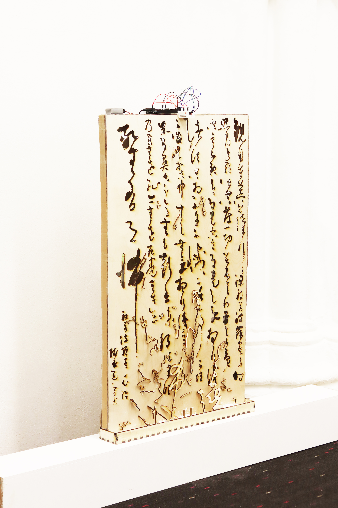
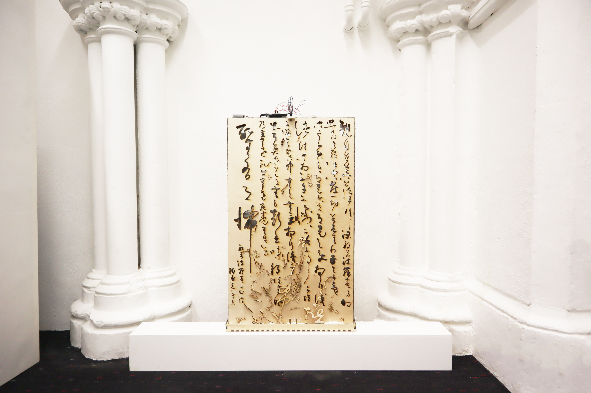
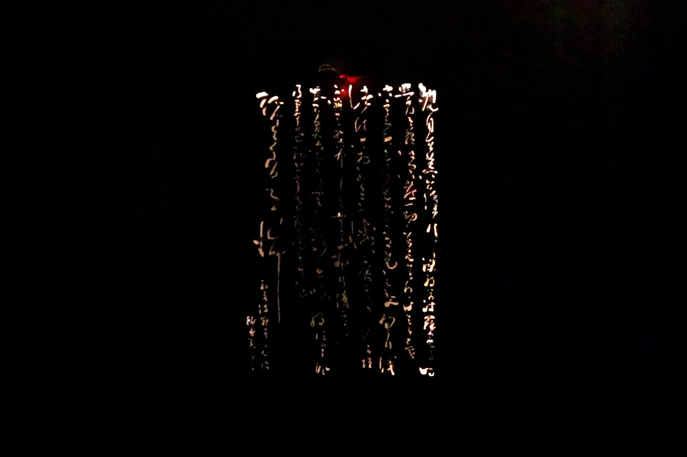

Vimeo Video
No Establishment of Word is an interactive installation that uses Calligraphic Texts as a medium to explore the inevitable 'breakage' and 'blank' between language and what it refers to in an abstract way, implicitly conveying the Zen philosophy of the 'unsayability' mindfulness.
Modern linguistics argues that the cognitive faculties of human beings make vague distinctions between classes, which makes it difficult for them to define and represent objective things accurately in language. The limitations of language itself tend to obscure meaning, and the denotative act it performs is a modification, a reduction or expansion of what is intuitive, showing the result of a mutation, and thus a "breakage" and a "blank" between language and the thing it refers to. This strong questioning of language coincides with Zen Buddhism. The "No Establishment of Words" is an important aspect of Zen Buddhism, where Zen masters believe that "Words are Empty" and advocate a way of communicating and comprehending Zen theory that is free from the concept of language.
In the work No Establishment of Words, the Calligraphic Texts from the Heart Sutra are framed in their momentary state as they peel off, while leaving hollowed out marks on the wooden panel. When these flaking texts are lit, the smoke from the burning wood is detected by the smoke sensor on top of the board and light comes through the hollowed-out area, appearing as a sutra text, with the intensity of the light varying positively according to the concentration of smoke.
Images
  语言无法触及实相，般若在不执于文字时显现。